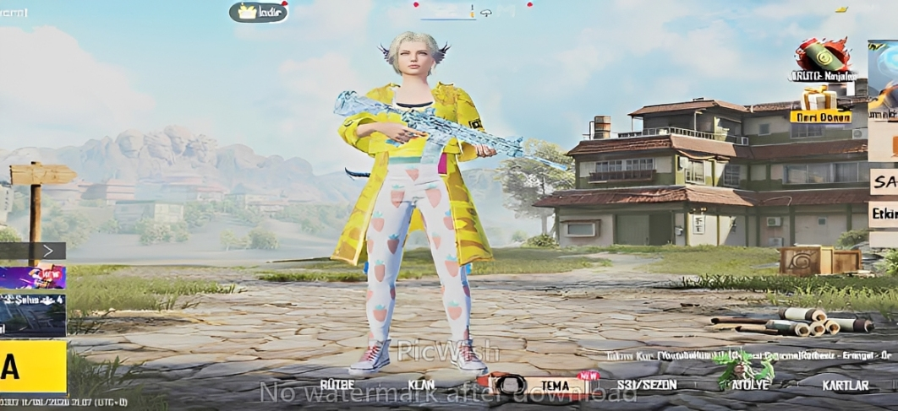
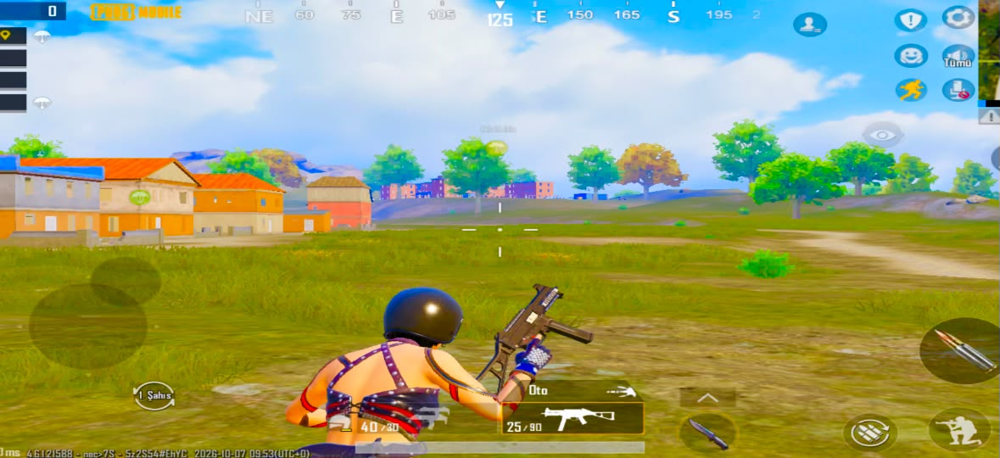
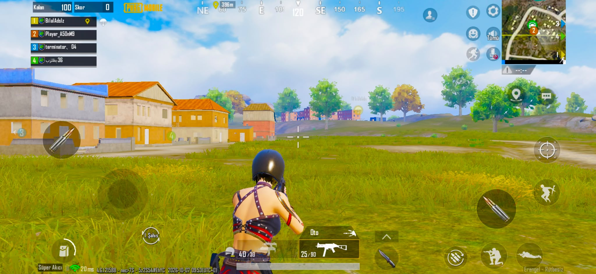
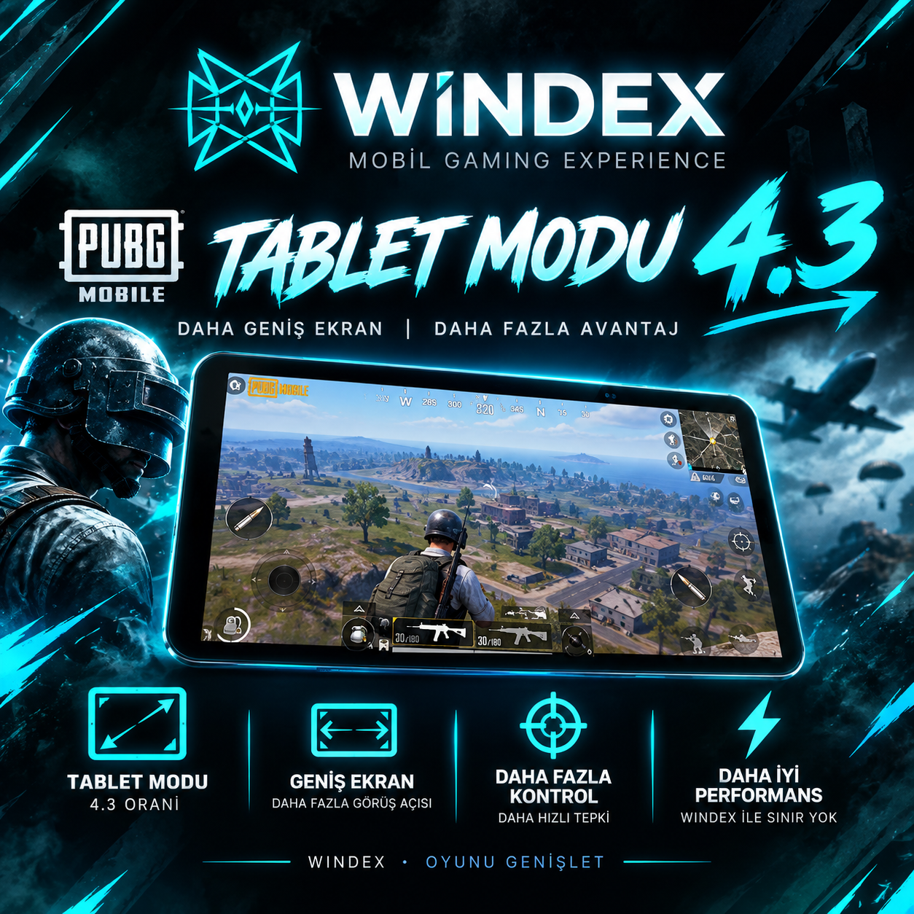

WINDEX ile mobil cihazınızın sınırlarını aşın. Oyun içi orijinal çözünürlük değerlerini optimize ederek tablet modunun geniş açısını telefonunuza taşıyın.

Normal telefon görünümü ile WINDEX Tablet Modu arasındaki devasa açı farkı.



Sağ ve sol açıdaki rakipleri sizi görmeden siz onları fark edin.
Oyun dosyalarını değiştirmediği için hiçbir güvenlik sistemine takılmaz.
Android cihazların tamamında sorunsuz çalışır.
Hayır, hiçbir şekilde ban riski yoktur. WINDEX bir hile, injector veya 3. parti mod yazılımı değildir. Sadece cihazınızın ekran çözünürlüğünü oyunun izin verdiği ölçüde tablet oranlarına (16:9 / 4:3) ayarlar. Güvenle kullanabilirsiniz.
Hayır. Oyun verilerine veya hafızasına (RAM) erişim sağlamaz. İşletim sisteminin çözünürlük parametrelerini düzenleyen bir optimizasyon aracıdır.
Ödemenizi tamamladıktan sonra Telegram üzerinden size özel indirme bağlantısı ve resimli/videolu kurulum rehberi anında iletilir.